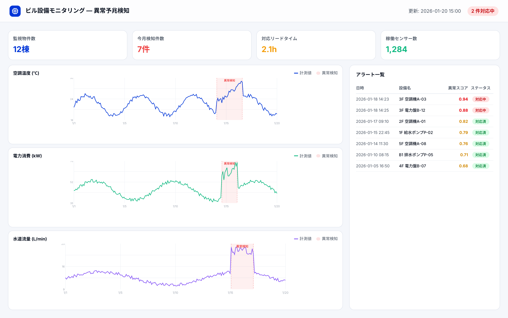

Use Case
ビル設備IoTデータからの異常予兆検知
IoTセンサーで収集した空調・電力・水道等の設備データを活用し、異常兆候を自動検知する仕組みを構築。
概要
ビル設備から収集される大量のIoTセンサーデータを統合し、異常兆候をスコア化して可視化。 データ駆動の監視基盤により、省人化と早期対応を実現しました。
導入効果
- データ駆動の異常検知で設備監視を自動化
- 標準化されたアルゴリズムで物件スケール拡大に対応
- 省人化と早期対応による運用コスト削減

顧客の業界
- ビル設備管理
- エネルギー
- 施設運営
導入前の課題 / 導入後の変化
Before
- 大量のセンサーデータを人の目で監視
- 閾値判定が属人的で基準が不統一
- 物件増加に伴い監視が追いつかない
After
- データ駆動の異常検知で監視を自動化
- 標準化されたアルゴリズムで物件スケール拡大に対応
- 省人化と早期対応を実現
導入内容
センサーデータ統合・前処理
空調・電力・水道等の多種データを統合し、欠損補完と正規化を実施。
複数手法による異常検知モデル構築
統計的手法と機械学習を組み合わせ、設備特性に適した異常検知を実現。
異常スコア可視化・アラート設計
異常スコアをダッシュボードで可視化し、アラート通知の運用を設計。
入力形式
IoTセンサーデータ（温度・湿度・電力・水量等）
出力形式
異常スコア、アラート通知、解析レポート
連携先
IoTプラットフォーム、BMS、通知システム
プロジェクト概要
体制・期間
- PoC → 運用設計 → 本番展開
- 施設管理担当 / IoT基盤担当 / 当社エンジニア
- クラウド環境でのデータ処理基盤を構築
成果指標
- 異常兆候の検知リードタイム短縮
- 監視対象物件のスケーラブルな拡大
- 監視業務の省人化を達成
お問い合わせ
IoTデータを活用した異常検知のPoCから運用設計まで、ご提案します。
- IoTセンサーデータの統合・前処理
- 異常検知モデルの構築・検証
- アラート通知と可視化ダッシュボード